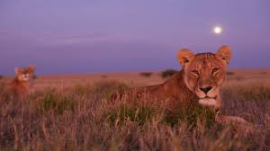

Explore the Wildlife of Nepal
Nepal, nestled in the heart of the Himalayas, is not only known for its stunning landscapes but also for its rich and diverse wildlife.
From the snow leopards roaming the high mountains to the rare Bengal tigers prowling the subtropical forests, Nepal offers a remarkable array of animal species.
Some of the fascinating wildlife you can encounter in Nepal include:
- The elusive snow leopard, an icon of the Himalayas
- The majestic Bengal tiger, found in the lush jungles of Terai region
- The one-horned rhinoceros, a symbol of conservation success in Chitwan National Park
- The red panda, a charming and endangered species inhabiting the dense forests of eastern Nepal
Embark on a wildlife safari in Nepal and witness these incredible creatures in their natural habitats.